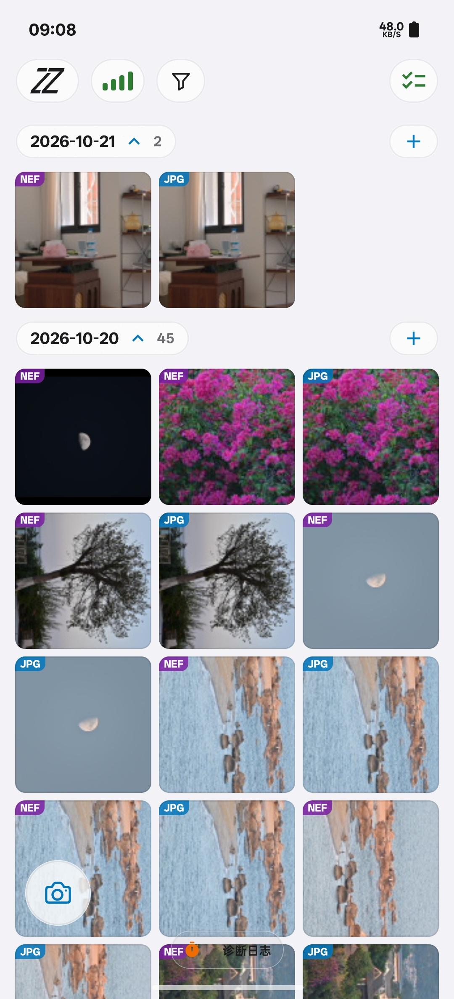
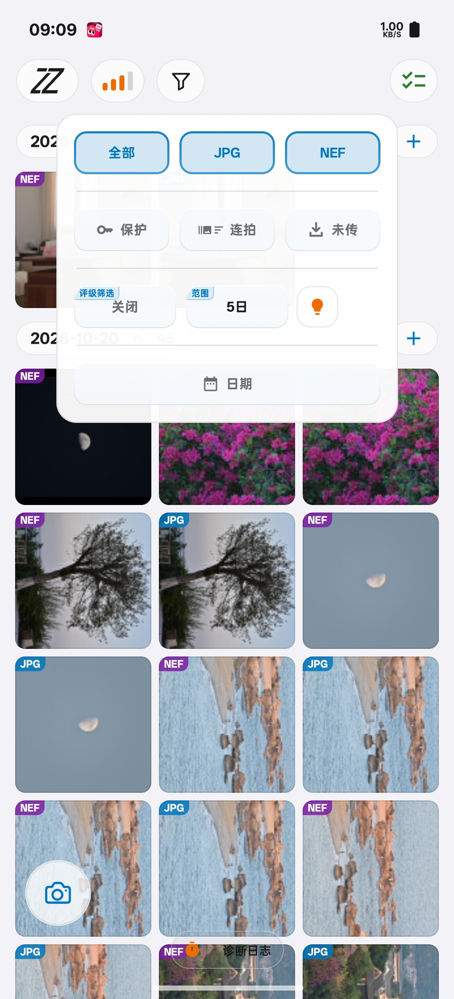

01 / 选片与传输
照片归好类，
好片一键传。
连拍成组，按日期、类型与评级筛选。
逐张挑，整组传，好片一次带走。


使用设置
传输
照片列表
照片效果
外观与操作
版本与反馈
传输目录
选择照片、RAW 和视频的保存文件夹。
存放方式
统一保存，或按拍摄日期、文件类型分文件夹；效果图单独保存。
实时传输
按所选类型，将新拍摄的全部、JPG、RAW 或视频自动加入队列。
选完再传
挑选入队后不会立即传输，适合预览大图挑选照片时开启。
每行数量
调整照片列表每行显示的数量。
连拍成组
将连拍合为一组，展开后逐张查看。
照片操作
切换点击与长按的预览、传输操作。
照片加载范围
按有照片的日期计数。选「5日」会加载最近 5 个有照片的日期，没拍照的日子不计入。
照片效果开关
在照片列表的设置中控制是否生成效果图；关闭后保留参数。
编辑照片效果
从照片列表打开设置，点卡片编辑；开启照片效果后，也可从 JPG 大图预览进入。
明暗
跟随系统，或固定使用深色、浅色。
语言
跟随系统，或选择应用语言。
按钮风格
更换按钮的外观材质。
触感反馈
开启或关闭操作时的振动。
屏幕常亮
使用 App 时保持屏幕亮起。
解锁高级版
免费用户可查看高级版权益并激活。
续费
有到期时间的高级版用户可续费，延长有效期。
更新
检查并下载新版本。
换机
高级版可复制激活码，在新设备激活后，本机恢复免费版。
反馈
复制客服 QQ 号。